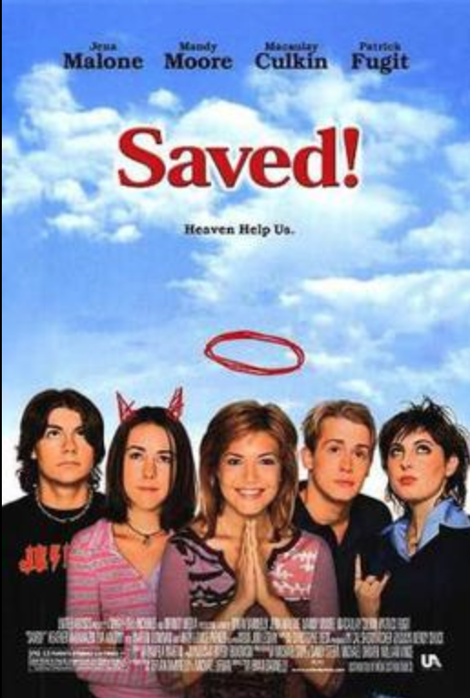

So last night, I watched a movie. A movie that made me become more aware of the state of Western Christianity today...and this movie is nearly 15 years old.
The movie I am referring to is 'Saved!', a satire (I must admit, a competely accurate satire) on Western Christianity. I first watched this movie when it came out back in 2004 at a friends house after school. I had never heard of it nor had any idea what it was about, but the movie started out strong and accurately portrayed what I thought then, to be the Christian faith. I figured I was in for a good clean movie. Boy, was I wrong! I was aghast, offended, and then deemed the movie as an attack on Christianity. My faith was violated, my beliefs were questioned, and if I had been watching the movie with a non-Christian friend I probably would have been in for some questioning or a debate which I was not prepared for. I would have failed the command of 2 Peter 3:15:
"But in your hearts honor Christ the Lord as holy, always being prepared to make a defense to anyone who asks you for a reason for the hope that is in you;"
I can't remember how but the movie came back to mind a couple weeks ago when I was on a hike with some friends, and looking back I realized that the movie was indeed a very accurate portrayal of Christians. My reason for offense at least back then, was misguided. So I was again hanging out with my same friends last night, and when deciding on a movie to watch I suggested 'Saved!', and it was everything I remember but not nearly as offensive, at least for me.
I highly recommend this movie as a believer, but not for means of entertainment, but to give you a very accurate portrayal of how the unbelieving world sees us, the church. The movie is PG-13, and I would place it on the higher end of the PG-13 spectrum due to content and language, but if you do decide to watch this movie, I would suggest using VidAngel (subscription needed, free trials available) as it can be linked with Amazon Video, which is what service we watched it by, although we watched it without a filtering service.
'Saved!' is akin to 'Mean Girls', so think 'Mean Girls' but rather taking place in a Christian School. The plot of the movie thus follows:
A young Christian teenage girl just entering her senior year, finds out her perfect Christian boyfriend is gay. She then 'feels guided by Jesus' to 'make him straight' by sleeping with him, as God will restore her virginity 'spiritually' as she is doing God's will. Well, that doesn't work. She gets pregnant, his parents find out he's gay and send him off to a conversion camp, and she starts her senior year pregnant and alone. She hides her pregnancy from her 'Christian Jewel' friends (a clique, also their 'band') that she is a part of. First day of school starts out with an assembly, which I must say, completely nailed it when it comes to the church experience as a youth. It was nostalgic and reminded me and of all those 'youth conferences' I used to go to (*cough* Acquire the Fire *cough*). The assembly starts out with the Christian Jewels playing some awesome 'worship' music, getting it's audience emotions stirring, then enters the Pastor/Principal. He comes on the stage with high energy, get's the students' emotions stirring even more, gets them hyped up, then...cue soft mood music. He then says something along the lines of, "Who wants to start this year of right, get right with Jesus, and recommit your life to the Lord." I mean, with all that pent up energy, who could possibly say no? Dozens of students procede to the stage for the alter call, and ask Jesus into their hearts. They are 'Saved'.
The movie continues as the main character's 'best friend' (played by Mandy Moore) tries desperately to convert a new, rebel Jewish student to Christianity to no avail. The main character confides in the new student about her pregnancy, they become friends (along with Mandy Moore's character's brother), who is now dating the Jewish girl and states that he actually " 'isn't a Christian' either". Sides are taken, love triangles form, drama ensues and the movie finally ends with a message. A message that God is real, morals are a gray area, and we should all just learn to 'love' and accept each other and their 'version' of Christianity... Enter the Progressive Christian movement. This movie was preaching Progressivism and Progressive Christianity before Progressivism was 'cool'.
Now that I have described the plot and if you are offended by just reading that, then be prepared to be extremely offended if/when you do watch it. But if you do watch it, ask yourself this question: 'Why are you offended?' Is it because the movie is accurately portraying Christianity, or inaccurately portraying Christianity? Well, I believe the answer is both. The movie very well accurately potrays 'Christianity' in America. I put quotes around Christianity on purpose. As I have stated multiple times before this movie nailed it. It got it right, and completely 'to a T' portrayed to the viewer the typical 'Christian/Church experience' for a youth, or anyone really. But it did indeed also inaccurately portray Christianity because that is NOT what a Christian is or should be. So what does this mean? Well it means that the Western Church is in big trouble on Judgement Day. And 'Big Trouble' on Judgement Day can only mean one thing... Jesus saying the horrific words of "Depart from me, I never knew you."
Guys, wake up! Watch this movie! Because it pulls absolutely no punches on how the non-believing world sees us! The movie was written and directed by a man who did indeed grow up in the church, attended Christian schools, only to leave the faith later. (Explains how the movie did such a good job. I figured that must have been the case, either that or someone did REALLY good research.) 75%-80% of youth leave the church after high school, intending never to come back. Want to know why? Watch this movie. Why do people have such a strong disdain for Christians? (not to be confused with the hatred Jesus promised from ACTUALLY being a Christian and pursuing Godliness) Watch this movie. Why has the Western Church almost become a laughing stock? Watch this movie. Why do self-proclaiming Christians (you?) think they are saved, when indeed they are actually not and heading for hellfire? Watch this movie.
This movie shows a faith 'parading' as Christianity, but to the viewer and from the perspective of the people who made the movie, that's what they believe Christianity actually is. This is a problem. It's a faith where people are trying to 'appear' Godly, yet have skeletons and sins in their closet. It's a faith where people judge everyone else, yet ignore the plank in their own eye. It's a faith of believing you are saved because 'you asked Jesus into your heart when you were three'. And it ends with the message that Christianity 'should be' a faith of tolerance and an acceptance of other's sin because 'Jesus loves them anyway.' This is wrong on every account! We should strive to be Godly yes, but we can't keep our skeletons in the closet. We must repent AND believe to be saved! And we should be loving and accepting yes, but not of sin! Love the sinner, hate the sin! Yes Jesus loves them, but He is also just and will send them to hell because of their sin! He loved them so much He died for their sin! If He loved them 'anyways' regardless of sin, then He would not to of had to die and suffer on behalf of it! If the world is going to hate us, let them hate us for the same reasons they hated Paul and the early church. Let them hate us because we preach sin and repentance, not because we are a 'mockery' of hatred ourselves.
Let me end this by saying again, this movie will most likely offend you. Also note, I am not condoning the content, or condoning ever really watching these types of movies. Again, I recommend watching it so that you can know just how you might look to the world, and if not you, the church collectively definitely does. A movie which one man made to mock/tear us down, let us use it to open our eyes and be hated for the right reasons, for the Gospel.
Blessings.